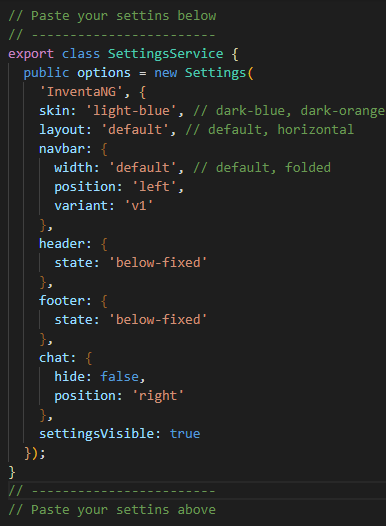

Angular is an open-source front-end framework developed by Google for creating dynamic, modern web apps.
Angular helps build interactive and dynamic single page applications (SPAs) with its compelling features including templating, two-way binding, modularization, RESTful API handling, dependency injection, and AJAX handling.
Angular/TypeScript duo is one of the most productive ways of developing mid-to-large size Web applications that can run in any modern Web browser as well as on mobile platform.
Below are some of benefits of choosing Angular:
Supported by Google - One of the biggest advantage of Angular is that it is supported by Google. The best part about it is Google’s Long-Term Support (LTS).
TypeScript - Angular applications are built using TypeScript language, a superscript for JavaScript, which ensures higher security as it supports types (primitives, interfaces, etc.). It helps catch and eliminate errors early when writing the code or performing maintenance tasks.
You can find more infomation about TypeScript at: typescriptlang.org
Modular Structure - Angular organizes code into buckets, whether it is components, directives, pipes, or services. Those who are familiar with Angular refer to these buckets as modules. Modules make application functionality organization easy, segregating it into features and reusable chunks. Modules also allow for lazy loading, which paves way for application feature loading in the background or on-demand.
Code Consistency - Consistent coding has several benefits, such as it makes sites easier to use and enables the use of templates or pre-defined code snippets.
Easy Testing - In Angular, testing is extremely simple. Angular.js modules has the application parts, which are easy to manipulate. With module separation, you can load the necessary services, while effectively performing automatic testing. You don’t even need to remember module loading order if you follow “one file-one module” principle.
Command Line Interface (CLI) comes with commands that help us create and start on our project very fast.
The Angular CLI helps with:
Bootstrapping a project -
It creates the initial project structure with a root
NgModule and a root component and bootstraps it using the
platformBootstrapDynamic method.
Serving and live reloading - The CLI starts a local web-server so we can view our application in the browser via localhost:4200.
The CLI also watches for any changes to our files and automatically reloads the webpage if there are any.
Code generation - Using the CLI we can create components directives, services, pipes etc… all from the command line with all the necessary files, folders and boilerplate code included.
Testing - The generated code also comes with bootstrapped jasmine test spec files, we can use the CLI to compile and run all the tests with a single command.
Whenever the CLI detects changes to any file it re-runs all the tests automatically in the background.
Packaging and releasing - The CLI doesn’t just stop with development, using it we can also package our application ready for release to a server.
At first, make sure your development environment includes Node.js® and an npm package manager.
Node.js
Angular requires Node.js version 8.x or 10.x.
node -v in a
terminal/console window.
npm package manager
Angular, the Angular CLI, and Angular apps depend on features and functionality provided by libraries that are available as npm packages. To download and install npm packages, you must have an npm package manager.
This Quick Start uses the npm client command line interface, which is installed with Node.js by default.
To check that you have the npm client installed, run
npm -v in a terminal/console window.
Install the Angular CLI globally.
npm install -g @angular/cli
To create a new workspace and initial app project:
1. Run the CLI command ng new and provide the name my-app, as shown here:
ng new my-app
2. The ng new command prompts you for information about features to include in the initial app project. Accept the defaults by pressing the Enter or Return key.
1. Go to the workspace folder (my-app).
2. Launch the server by using the CLI command
ng serve, with the --open option.
cd my-app ng serve --open
For the simplest deployment, create a production build and copy the output directory to a web server.
1. Start with the production build:
ng build --prod
2. Copy everything within the output folder (dist/
by default) to a folder on the server.
3. Configure the server to redirect requests for missing files
to index.html
Angular offers two ways to compile your application:
Just-in-Time (JIT), which compiles your app in the browser at runtime.
Ahead-of-Time (AOT), which compiles your app at build time.
JIT compilation is the default when you run the ng build (build only) or ng serve (build and serve locally) CLI commands:
ng build ng serve
For AOT compilation, include the --aot option with the ng build or ng serve command:
ng build --aot ng serve --aot
The ng build command with the --prod meta-flag (ng build --prod) compiles with AOT by default.
If you don't have Node.js installed, download and install it from nodejs.org/en/download/
Note: On download page choose Recommended For Most Users
Download and install git for your environment from this address git-scm.com/download
Download the latest theme source from the Github.
Or, clone the repo:
git clone https://github.com/mdathemes/inventa-ng.git my-project
cd my-project
Open the Theme in your favorite code editor.
Install the Angular CLI globally running this command:
npm install -g @angular/cli
After the tools is installed, go inside of the theme directory and install dependencies:
npm install
This command will install node dependencies defined in
package.json
To run a local copy in development mode, execute the command below:
ng serve --open
Theme Settings have predefined options that define the look of the theme.
The process of customizing the theme using predefined options is quite easy.
In addition to choosing one of the 8 predefined skin colors, it is also possible to customize the layout.
After selecting the desired options, you need to copy them by clicking the Coppy Settings button at the bottom of the Theme Settings section.
The options are copied to the clipboard and the last step is to paste them into the file settings.service.ts located at the app /layout/_settings folder.
So the process of customizing the theme using the predefined options consists of the three steps described in the pictures below
Paste selected options into the file settings.service.ts located at the app /layout/_settings folder.
The prosess of creating a Custom Skin is very simple, because _custom.scss file has been already created and all you need to do is to follow these steps:
skin: 'light-blue' to
skin: 'custom' in
settins.service.ts file
located at
app/content/layout/_settings/
To create a new page please follow these steps:
ng g module page-name
cd page-name to change directory into the
newModule folder
ng g component page-name --flat
5. Configure the routes at new-page.module.ts
Now, new-page.module.ts shuld look like below:
import { NgModule } from '@angular/core';
import { CommonModule } from '@angular/common';
import { NewPageComponent } from './new-page.component';
import { RouterModule } from '@angular/router';
export const routes = [
{ path: '', component: NewPageComponent, pathMatch: 'full' }
];
@NgModule({
declarations: [NewPageComponent],
imports: [
CommonModule,
RouterModule.forChild(routes)
]
})
export class NewPageModule { }
6. Add a new route to pages.routing.ts located at app/pages/
{
path: 'new-page',
loadChildren: './new-page/new-page.module#NewPageModule',
data: { breadcrumb: 'New Page' }
}
7. And the last step is to add a link to the new page to the Navigation.
You can find navigation data in nav.data.ts located at app/layout/navigation/nav-core
Root Navigation Link
Below is an example of adding new link to root of the Navigation:
export const NavData = [
// Root
new NavModel(1, 'Dashboard', '/dashboard', null, 'area-chart', 'fa', null, false, 0),
new NavModel(2, 'New Page', '/new-page', null, 'icon-name', 'fa', null, false, 0),
.
.
.
]
In above example new link is added to the root list of the navigation items and below Dashboard link.
Sublink
In order to add link as sublink of other link, we need to add a foreign id of the parent link.
For example if we want to add new link as a sublink of Dashboard link we will add the following code:
export const NavData = [
// Root
new NavModel(1, 'Dashboard', '/dashboard', null, 'area-chart', 'fa', null, true, 0),
new NavModel(2, 'New Page', '/new-page', null, 'icon-name', 'fa', null, false, 1),
.
.
.
]
New page is available by the following this url http://localhost:4200/new-page
| • node_modules/ | NPM package installation folder |
| • src/ | This folder contains the actual source code for developers. |
| • app/ | Contains all the “modules” and “components” of our application. Every application has at least one “module” and one “component”. |
| • content/ | Contains UI visible content of our application |
| • auth/ | Authentication module. Contains Login, Register and Password Recovery components |
| • layout/ | Contains main structure of UI as Header, Navigation, Footer ... |
| • pages/ | Place where we create pages and their content |
| • shared/ | Shared and reusable components, data, services, directives ... |
| • styles/ | All scss files where we define the look of our application |
| • app.component.html | Main application html file |
| • app.component.ts | Main application component |
| • app.module.ts | Main application module |
| • app.routing.ts | Application routes |
| • assets/ | Static assets |
| • fonts/ | Some additional fonts used on the theme |
| • images/ | Images used in the theme |
| • lib/ | 3rd Party Libraries |
| • environments/ | Contains files whre we can store configuration settings for different environments. |
| • favicon.ico | Favicon |
| • index.html | Contains our Angular application. Here, you can not find any reference to CSS or other JS files. All other pages are dynamically inserted into the page. |
| • karma.conf.js | File used to store the setting of Karma i.e. test cases. |
| • main.ts |
Starting point of our application. Here, we can bootstrap
(the process of initializing or loading) our main module
using bootstrapModule method like
platformBrowserDynamic().bootstrapModule(AppModule);
|
| • polyfills.ts | Imports scripts required for running Angular because angular framework uses the features of javascript which are not available in the current version of javascript supported by the most browser |
| • styles.scss | Default scss stylesheet |
| • test.ts | Used for setting the testing environment |
| • .editorconfig | Used when you are working in a team environment. If you are working in a team environment then make sure that all developers of a team use the same setting in this file. |
| • angular.json | Standard configuration file of the application |
| • packege.json | Contains all information like name of the project, versions information, dependencies and dev-dependencies settings |
| • tsconfig.json | Has a bunch of settings for your TypeScript compiler, so the typescript compiler looks at the setting and based on these settings, compile the typescript code into javascript, so that browser can understand. |
| • tslint.json | Checks the TS code for readability, maintainability and functionality errors. |
| • styles/ | Contains multiple scss files which manage theme layouts, colors, elements ... |
| • _partials/ |
Contains files that define the look of individual theme
parts Important: The contents of this folder should not be changed! |
| • _layouts/ |
Contains styles that define different layouts and
responsivity Important: The contents of this folder should not be changed! |
| • _default.scss |
Defines styles for default - vertical layout Important: The contents of this folder should not be changed! |
| • _horizontal.scss |
Defines styles for horizontal layout Important: The contents of this folder should not be changed! |
| • _variables.scss |
Contains variables that define the size of individual
elements. Variables in this file can be changed! |
| • skins/ |
Contains scss files that define different skin colors. Important: In this folder, nothing should be changed except custom-skin.scss files! |
| • base.scss |
Some general static styles Important: In this folder, nothing should be changed except custom-skin.scss files! |
| • theme.scss |
Combines themes and layouts depending on the options set
in the settings.service.ts file Important: In this folder, nothing should be changed except custom-skin.scss files! |
| • custom.scss | An empty file where developer should set its own styles. |
INVENTA-ng Code is released under MIT licence apart redistribution the code as stock. REDISTRIBUTION IS NOT PERMITED.
Copyright 2018 MERSUDIN DELIC
Permission is hereby granted, free of charge, to any person obtaining a copy of this software and associated documentation files (the "Software"), to deal in the Software without restriction, including without limitation the rights to use, copy, modify, merge, publish, distribute, sublicense, and/or sell copies of the Software, and to permit persons to whom the Software is furnished to do so, subject to the following conditions:
The above copyright notice and this permission notice shall be included in all copies or substantial portions of the Software.
HE SOFTWARE IS PROVIDED "AS IS", WITHOUT WARRANTY OF ANY KIND, EXPRESS OR IMPLIED, INCLUDING BUT NOT LIMITED TO THE WARRANTIES OF MERCHANTABILITY, FITNESS FOR A PARTICULAR PURPOSE AND NONINFRINGEMENT. IN NO EVENT SHALL THE AUTHORS OR COPYRIGHT HOLDERS BE LIABLE FOR ANY CLAIM, DAMAGES OR OTHER LIABILITY, WHETHER IN AN ACTION OF CONTRACT, TORT OR OTHERWISE, ARISING FROM, OUT OF OR IN CONNECTION WITH THE SOFTWARE OR THE USE OR OTHER DEALINGS IN THE SOFTWARE.
INVENTA-ng is an MIT licensed open source project and completely free to use.
However, given the great effort and time to create an high quality admin theme, your help is necessary to us in order to provide you more content and more quality code. You can support our work donating on PayPal. Thank you in advance. Your help will be very appreciated.